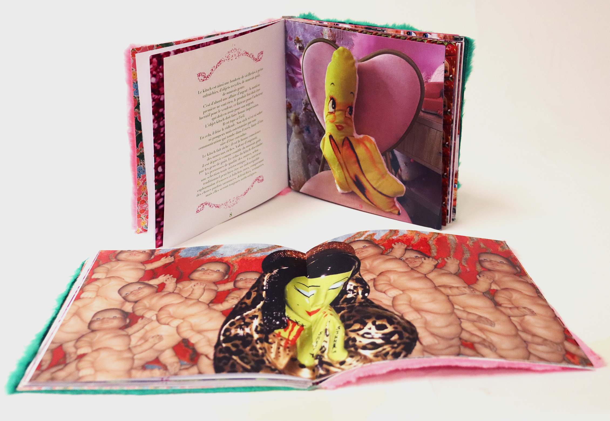
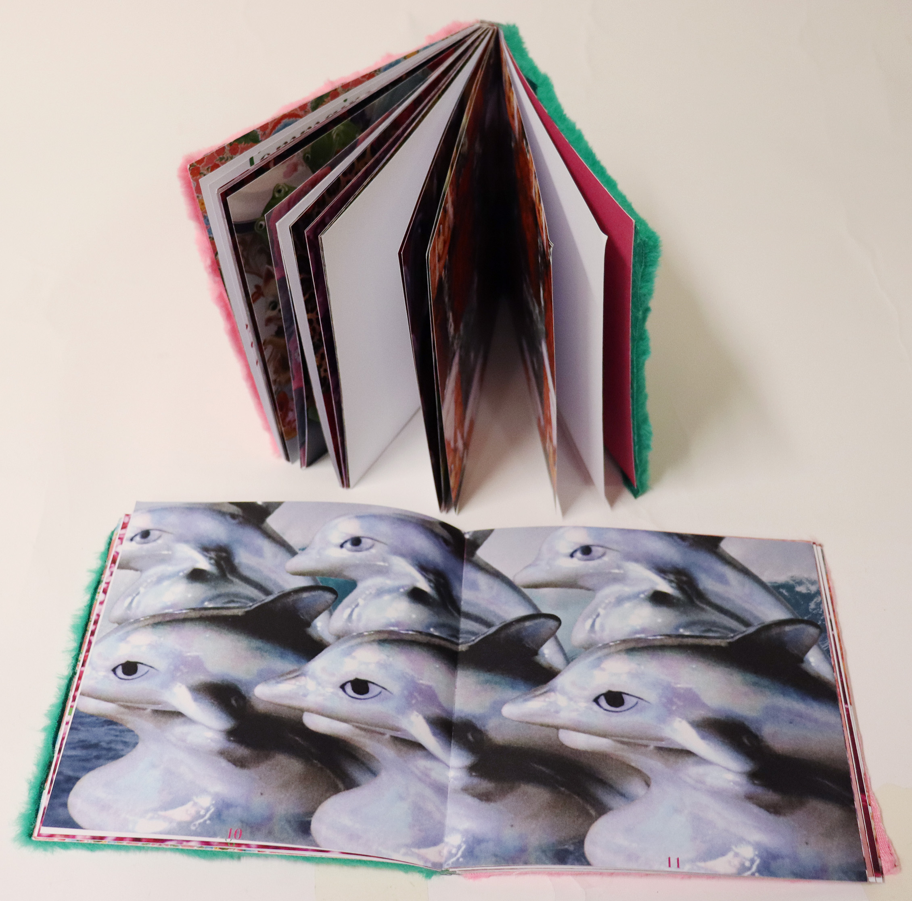
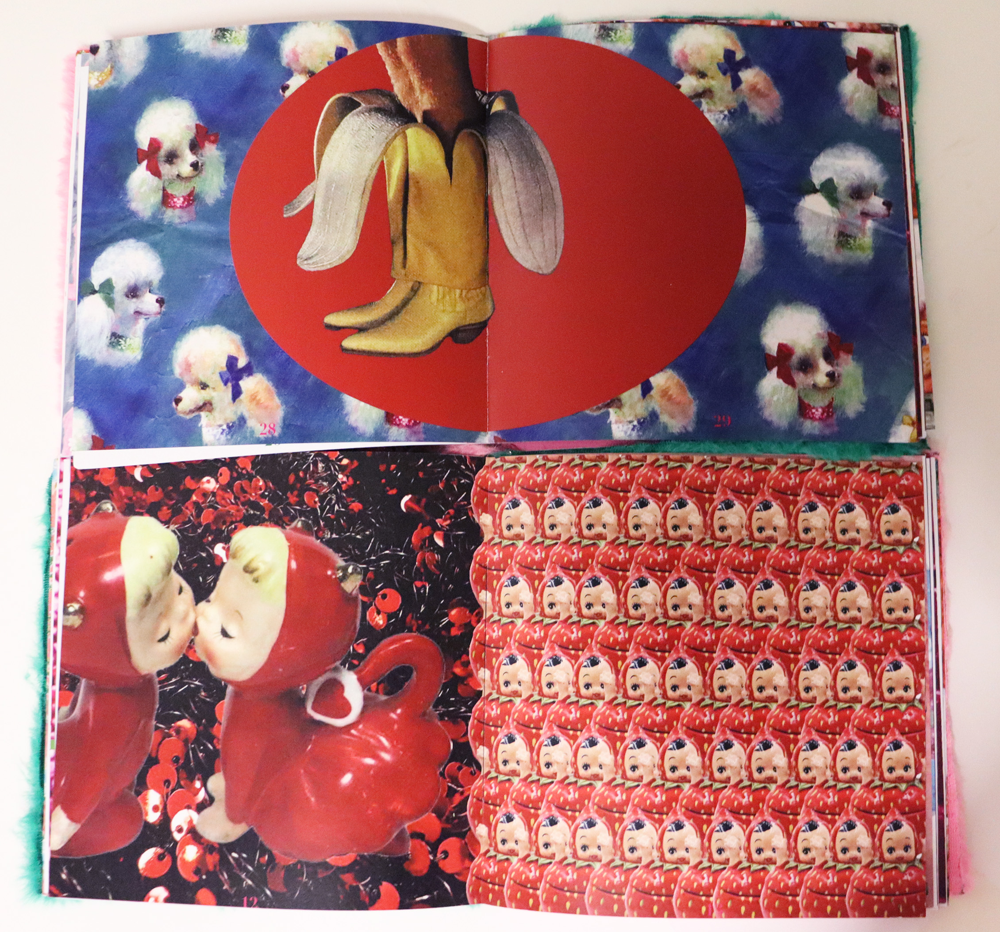
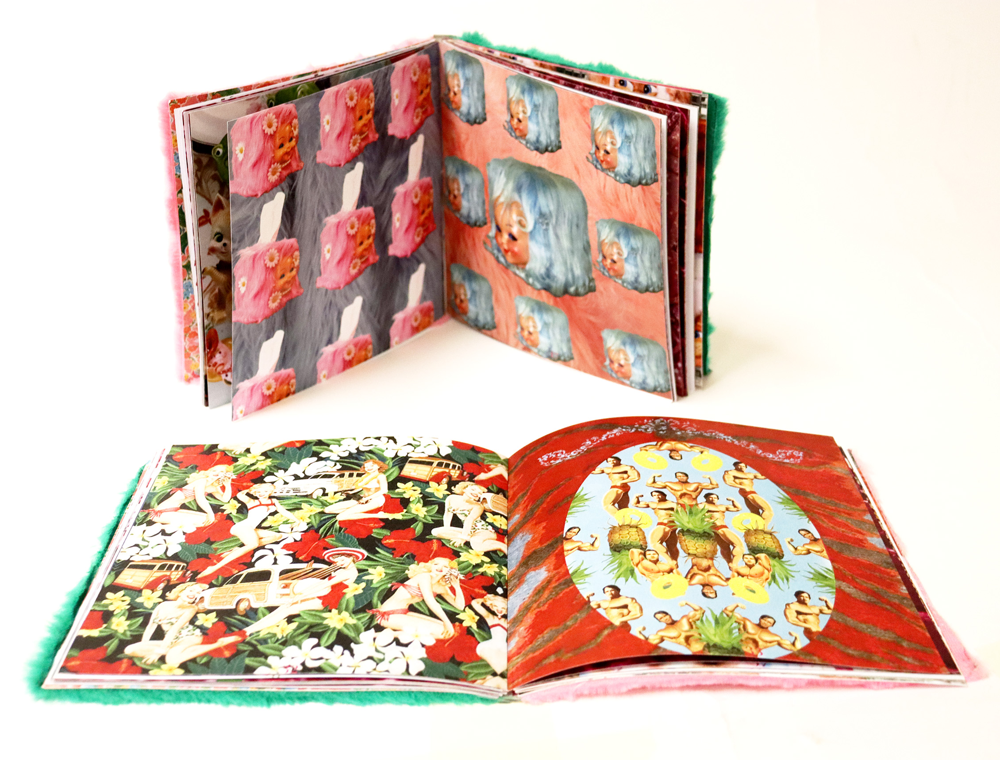
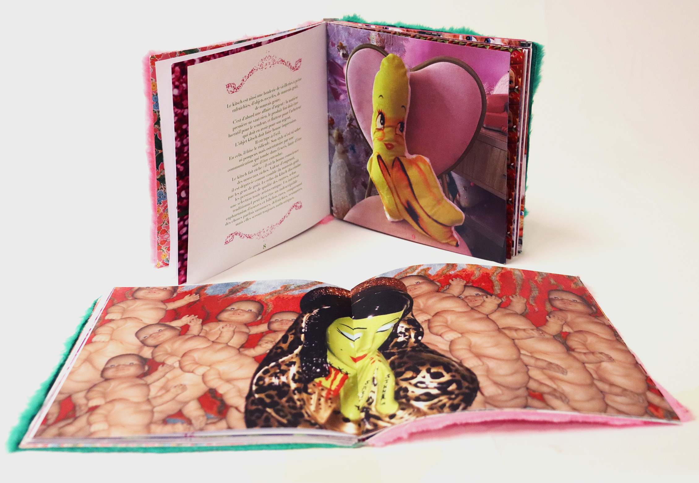
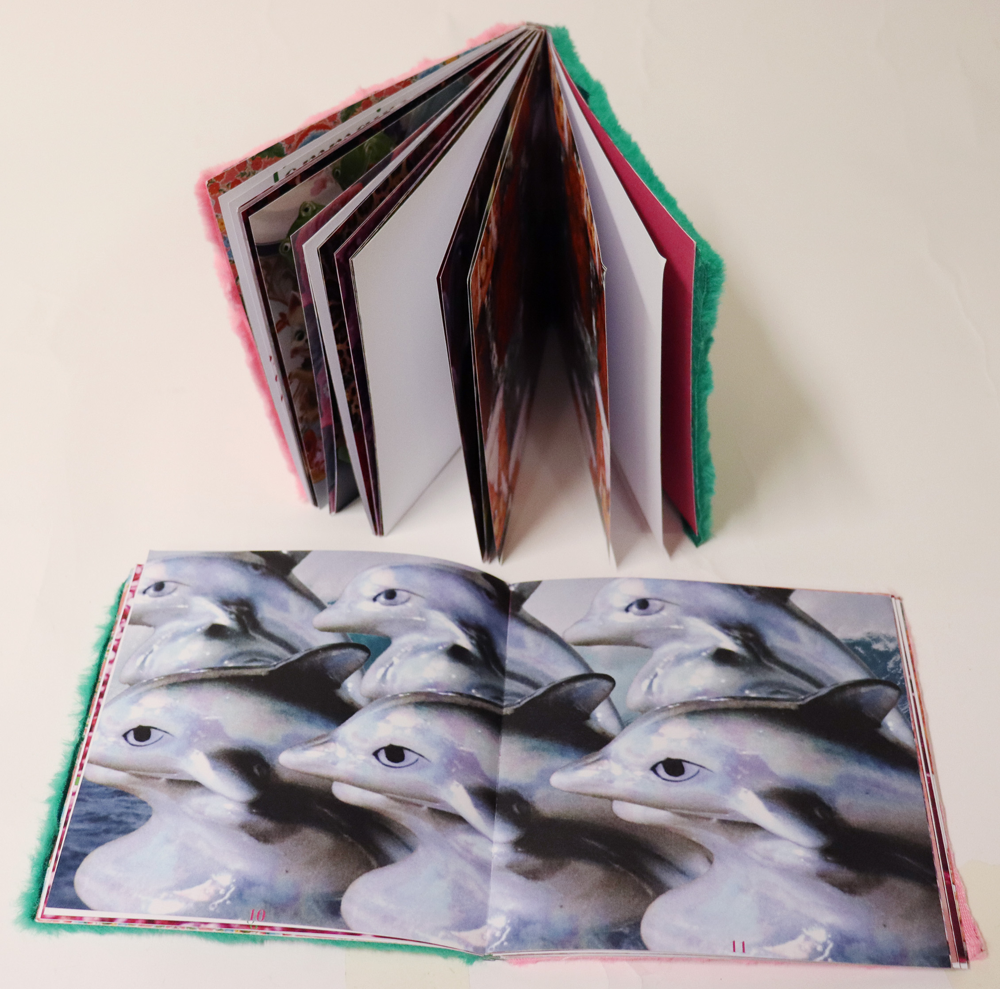
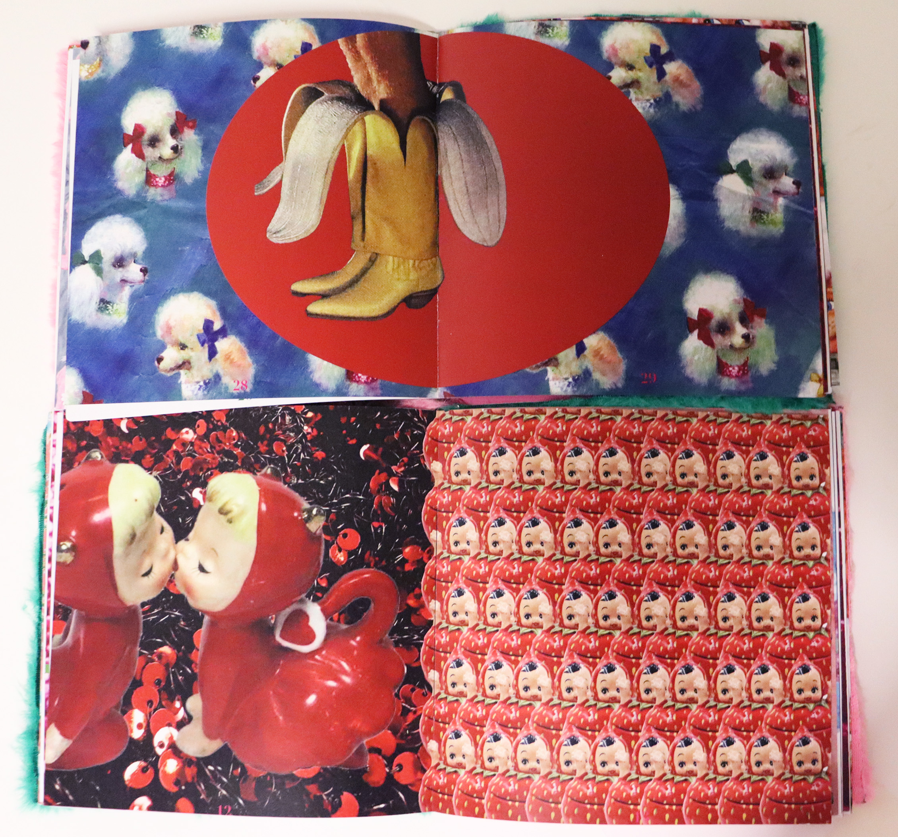
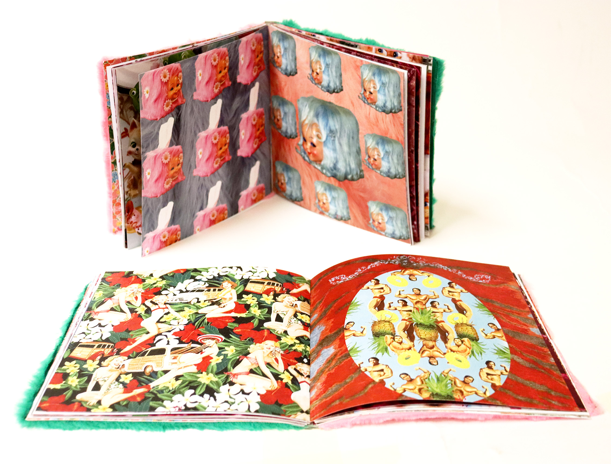

Le terme "Kitsch" est d'origine bavaroise désignant "déchets, ordures, oeuvres d'art baclées, de mauvais-goût". Cette édition est née de l’envie de créer un objet aussi kitsch que son contenu. Avec Lison Caresmel, nous avons collecté de nombreuses images d’objets et de motifs qui nous semblaient pertinents pour le sujet, puis nous nous sommes amusées à les assembler en différentes compositions.